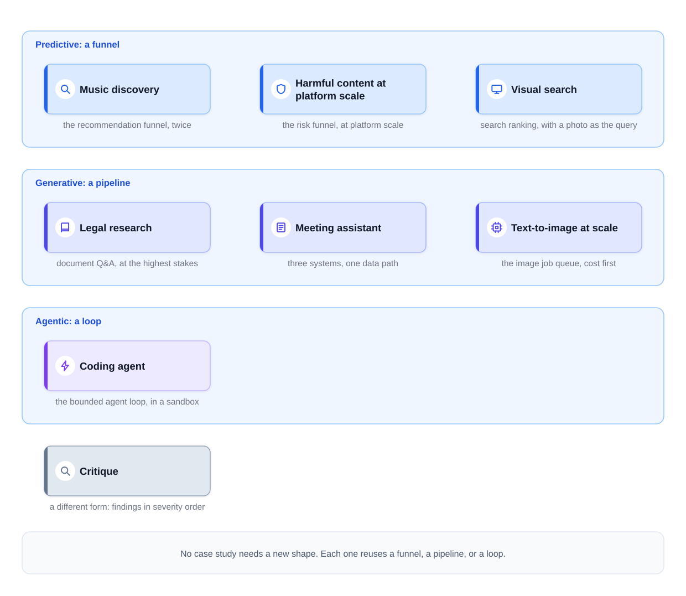
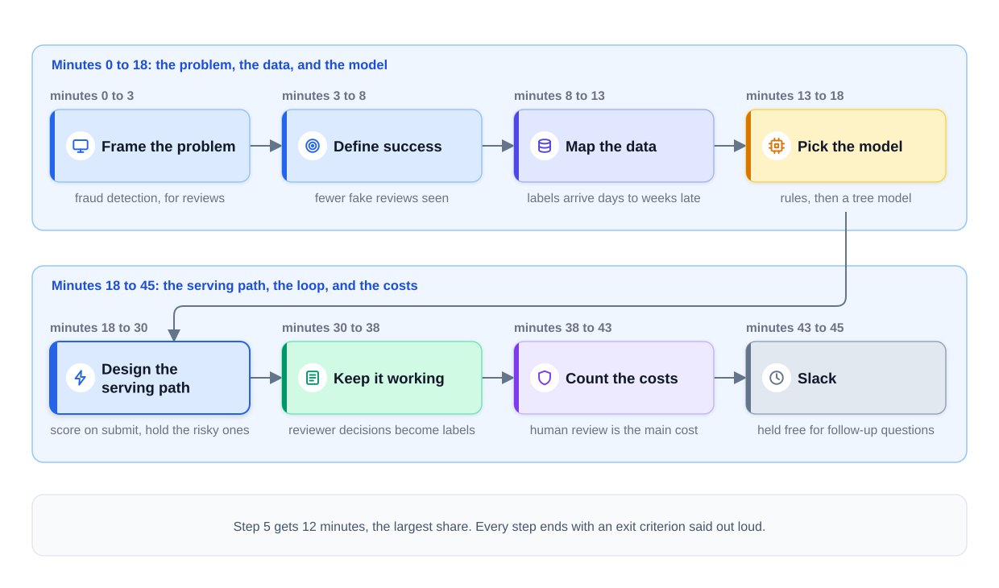
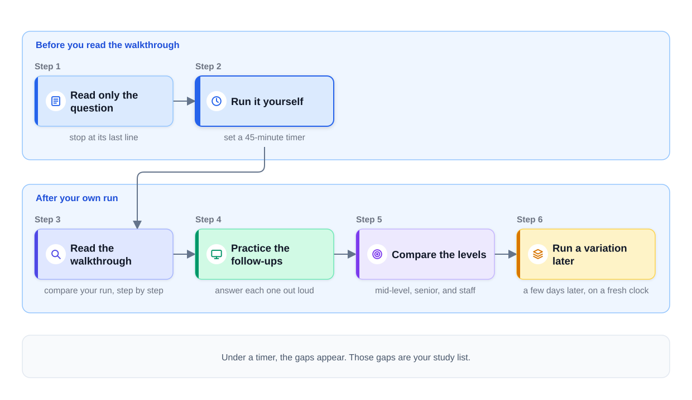

0% completed
Introduction: System Design Interview Case Studies
On This Page
Know the Vocabulary
Part 1: Knowing the Parts Is Not Enough
What Interviewers Expect
Part 2: Recognize, Then Adapt
The Definition
When Recognition Fails
What Recognition Is Not
Part 3: The 45-Minute Clock
Adjust the Clock to the Question
When the Interviewer Redirects
Part 4: Follow One Question on the Clock
Part 5: How to Use the Case Studies
Part 6: The Lessons in This Module
Part 7: Where This Module Fits in the Framework
Part 8: What This Module Reuses
Part 9: Common Mistakes This Module Prevents
Mistake 1: Reading Before Running
Mistake 2: Spending Half the Interview on Requirements
Mistake 3: Recognizing Without Adapting
Mistake 4: Stopping When the Answer Reaches the User
Mistake 5: Going Deep Without Being Asked
Mistake 6: Practicing in Silence
FAQs
Key Takeaways
Check Your Understanding
Know the Vocabulary
This lesson uses the terms below many times. Read them once now, and come back here when a later section needs one.
- Case study: A full interview question, worked from the first minute to the last, the way a strong candidate would answer it.
- Seven-step framework: The course's order for answering a design question. The steps are frame the problem, define success, map the data, pick the model, design the serving path, keep it working, and count the costs.
- Question family: One of three groups of AI design questions, sorted by what the system mainly produces. Predictive systems produce scores, generative systems produce content, and agentic systems take actions.
- Funnel: The usual shape of a predictive design, which starts with many candidates and keeps fewer, with a more careful check at each stage.
- Pipeline: The usual shape of a generative design, which is a fixed series of stages that turns a request into content. Examples of stages are retrieve, assemble the context, generate, and check.
- Loop: The usual shape of an agentic design, in which a model picks an action and a tool runs it. The model reads the result before it picks the next action, and limits on steps, time, and cost keep the loop bounded.
- Known system: A design you have already studied in this course, such as fraud detection or document question answering.
- Recognition move: Saying, in the first minutes of the interview, which known system the new question is, and what is different this time.
- Timebox: A fixed number of minutes given to one task in advance. When the minutes run out, you move on.
- Exit criterion: The short sentence you say out loud to close one step before you start the next, stating the decisions that step made.
- Slack: Minutes you keep free at the end of your plan for the interviewer's extra questions.
- Follow-up question: A question the interviewer asks to test one part of your design more deeply, such as "What happens when the model is down?"
- Primary metric: The one number that decides whether a launch succeeded. Some case studies call it the north star metric.
- Guardrail metric: A number that must not get worse, which can block a launch even when the primary metric improves.
- Label delay: The time between a prediction and the arrival of its real outcome.
- Fallback: What the system does, as decided in advance, when a part fails or is too slow.
Part 1: Knowing the Parts Is Not Enough
Modules 2 to 7 taught the parts of AI systems one at a time. Module 2 built the offline plane, the online plane, and the feedback loop. Module 3 used them for classic predictive designs. Modules 4 and 5 added large language models (LLMs) and retrieval. Module 6 built generative products, and Module 7 added agents that act through tools.
An interview is different, because it gives you one question and about 45 minutes. You must choose the parts, connect them, and explain each choice out loud. The interviewer asks questions along the way. And the answer must reach the end: how the system stays accurate, what can break, and what it costs.
Here is a common way to fail. A candidate who knows the material well spends 25 minutes on requirements. Then the architecture gets drawn in a hurry. Time runs out before the candidate says how the system is measured, how it fails, or what it costs.
The interviewer can grade only what was said. A part that was never spoken leaves no evidence that you know it.
So this module adds no new parts, and it trains the performance instead. It contains a pacing guide, seven timed case studies, and one exercise in critiquing a finished design.
What Interviewers Expect
Interviewers do not expect you to invent a new architecture in 45 minutes. They expect you to see which known design fits the question. Then they expect you to adapt it and cover every step at the right depth.
They also watch how you use the time. Three skills show up in every case study:
- Recognition. You name the known system quickly, so you do not rebuild the basics from nothing.
- Pacing. You reach all seven steps, including the feedback loop, the risks, and the cost.
- Depth on request. You go deeper where the interviewer asks, and you keep the other parts short.
A candidate who says "I'll keep the data part short and come back to it if you want more detail" shows control of the clock. That sentence takes three seconds, and it tells the interviewer that a plan exists.
Part 2: Recognize, Then Adapt
The Definition
The recognition move is the opening of a strong answer. In the first two or three minutes, you say which known system the question is, and then what changes this time. The move has three parts.
-
Name the family. Ask what the system mainly produces. A score points to a predictive design with a funnel. Content points to a generative design with a pipeline. Actions point to an agentic design with a loop. The Three Question Families gives this test.
-
Name the known system. Pick the design from this course that is closest to the question. For example: "A podcast feature is a recommendation system where the items are podcasts."
-
Name what changes. Say the one or two requirements that make this question different from the known system. Those changes decide where your minutes go. The parts that stay the same get a short sentence each, and the changes get the depth.
Then confirm the scope with the interviewer, as Step 1 of the framework does.
Recognition helps in two ways. First, the known system gives you a tested starting architecture, so you spend your minutes on the differences. Second, it gives the interviewer a shared map. When you say "this is fraud detection, for reviews," the interviewer knows where your answer is going.
The diagram below groups the case studies of this module by family. Each card names the known system that the case study starts from.

The list below gives the same map in words, with one more detail for each case study.
- Music discovery is the recommendation funnel, twice. A weekly playlist is computed ahead of time in a batch job. A radio feature picks the next song online, while the user listens.
- Harmful content at platform scale is the risk funnel, at platform scale. It also has an adversary: people who change their posts to get past the checks.
- Visual search is search ranking, with a photo as the query. Listings disappear as items sell, so the index changes all day.
- Legal research is document Q&A, at the highest stakes. One invented citation can cost the customer, so every claim must be checked.
- The meeting assistant is three systems, one data path. Live transcription, summaries after the call, and questions over past meetings all share the same recordings.
- Text-to-image at scale is the image job queue, cost first. The interviewer cares about the bill, so cost shapes the design from the start.
- The coding agent is the bounded agent loop, in a sandbox. A sandbox is a sealed environment with no access to production systems. Tests check the agent's work, and a human review of each pull request approves it.
- The critique is a different form: findings in severity order. It does not follow the seven steps at all.
Notice that no case study needs a new shape. Each one reuses a funnel, a pipeline, or a loop from an earlier module. The real work in each case study is in what changes.
When Recognition Fails
When a question matches no system you know, use the family test alone. The family gives you the shape, and the seven steps give you the order. That is enough to build an honest answer in front of the interviewer.
What Recognition Is Not
Recognition is not copying, because a known design with no changes answers a different question. Suppose you say "this is a recommendation system" and then draw Module 3's video design unchanged. You have ignored what the question asked.
Recognition is not memorizing answers, because the case studies teach moves that transfer to new questions. A memorized answer breaks as soon as the interviewer changes one number or one constraint.
Recognition is not a private guess, so say it out loud and let the interviewer correct it early. A wrong match found at minute 2 costs little, but one found at minute 25 costs most of the interview.
Part 3: The 45-Minute Clock
The framework from Module 1 gave each step a share of a 45-minute interview. Every case study in this module starts from the same split. The table below adds the exit criterion for each step.
| Minutes | Framework step | Exit criterion, said out loud |
|---|---|---|
| 0 to 3 | 1. Frame the problem | "This is [known system], with [what changes]. [X] is out of scope. Does that match what you want?" |
| 3 to 8 | 2. Define success | "The primary metric is [metric], with [guardrail] as a guardrail. The latency target is [time], at [volume]." |
| 8 to 13 | 3. Map the data | "Labels come from [source] and arrive after [delay]. The freshest data must be [freshness]." |
| 13 to 18 | 4. Pick the model | "The baseline is [simple approach]. I would upgrade to [next approach] if [evidence]." |
| 18 to 30 | 5. Design the serving path | The diagram is complete, and every arrow has a time limit, a cost, and a failure behavior. |
| 30 to 38 | 6. Keep it working | "[Offline check] gates each change, [online metric] decides, and retraining runs [how often]." |
| 38 to 43 | 7. Count the costs | Two ledgers: the top failures with a response for each, and the unit cost times the volume. |
| 43 to 45 | Slack | Held free for follow-up questions. |
Steps 1 and 2 together take the first 8 minutes. Some lessons treat them as one phase, because the scope and the targets are agreed together.
Notice that Step 5 gets 12 minutes, the largest share. The serving path is where most of the design lives. It is also where interviewers ask the most follow-up questions.
The clock totals 43 minutes and holds 2 minutes of slack. Follow-up questions also arrive in the middle of steps. So treat the times as a plan, not a rule. If one step runs 2 minutes long, take the 2 minutes back from a later step.
Adjust the Clock to the Question
The split changes with the question, and four adjustments are common.
- Predictive questions often need more time on data and labels in Step 3.
- Generative questions often need more time on context, cost, and evaluation.
- Agentic questions need time for tool permissions and for the limits on the loop.
- A stated priority moves its step forward. If the interviewer says "I care about the bill," cost enters the answer in the first minutes, as in the text-to-image case study.
When the Interviewer Redirects
If the interviewer says "skip to the architecture," do it. First, state the targets you would have set, in one sentence. For example: "I will assume a 300 ms limit and about 10,000 requests per second." The numbers come with you, even when the steps move.
Part 4: Follow One Question on the Clock
The fastest way to understand the clock is to run one question on it. The question below is not one of this module's case studies. It is a short run that shows the pace. The numbers are illustrative assumptions.
"Our food-delivery app has a fake review problem. Some restaurants post five-star reviews about themselves, and some post one-star reviews about rivals. Design a system that finds fake reviews."
Step 1: Frame the problem (minutes 0 to 3). The system gives each review a score, so this is a predictive question. The closest known system is Design Fraud Detection. Fraud detection judges one payment at a time. It faces an adversary, a person who studies the system and changes behavior to get past it. Its labels also arrive late, and all three facts hold for reviews.
What changes is the item, because a review has text, a star rating, and an account behind it. Fake reviews also tend to come in groups, because one business may pay many accounts to post them. Fraud detection calls such a group a ring.
In the stated scope, text reviews and star ratings of restaurants are in. Photos and ratings of delivery drivers are out. Then the candidate asks whether that matches what the interviewer wants.
Exit criterion: "This is fraud detection, for reviews. Photos are out of scope."
Step 2: Define success (minutes 3 to 8). The primary metric is the share of review views that land on fake reviews. Reviewers estimate it by checking a random sample of the reviews that customers saw. The guardrail metric is the rate of real reviews removed by mistake. Appeals that reviewers later overturn give one measure of it.
A review can wait a short time before it appears. So the example target is to publish within one minute. The example volume is 500,000 new reviews a day, or about 6 per second.
Exit criterion: "Success is fewer fake reviews seen and few real reviews removed. Reviews appear within a minute, at about 6 per second."
Step 3: Map the data (minutes 8 to 13). The inputs are the review text and rating, and the account's age and history. They also include whether the account really ordered from that restaurant. Devices and payment cards shared with other accounts link the members of a ring.
Labels come from the trust team's decisions on reviewed cases. Customer reports help, but many of them are wrong. Each decision takes time, so labels arrive days to weeks late, and label delay is real here. Some features must be fresh within minutes, because a paid campaign can post 50 reviews in one hour.
Exit criterion: "Labels come from reviewer decisions, days to weeks late. Counts of recent reviews must be fresh within minutes."
Step 4: Pick the model (minutes 13 to 18). The baseline is a set of rules, such as holding any five-star review from an account created in the last hour. Next comes a gradient-boosted tree model. It combines many small decision trees, and each tree is a chain of yes-or-no questions about the features. The upgrade is a nightly graph job that finds groups of linked accounts.
Exit criterion: "The baseline is rules, then a tree model. I would add a graph job if single-review scores miss organized rings."
Step 5: Design the serving path (minutes 18 to 30). This longest step has a short plan: score on submit, hold the risky ones. A new review goes onto a queue, and a worker scores it within seconds. The model itself needs only a few milliseconds. The score leads to one of three actions.
- A low score publishes the review.
- A middle score publishes it but keeps it out of the restaurant's average rating until a later check.
- A high score holds it for a human reviewer.
The nightly graph job looks for rings among past reviews. It can send a whole ring to review at once. If the scoring service fails, reviews wait in the queue. After one minute, they publish but stay out of the average rating until they are scored.
Exit criterion: "The diagram is complete. Each arrow has a time limit, a cost, and a failure behavior."
Step 6: Keep it working (minutes 30 to 38). Reviewer decisions become labels, one for each reviewed case. Offline, each new model is tested on past confirmed cases. It must keep its recall, the share of fake reviews it catches, without removing more real reviews. The adversary adapts, so the team watches the daily share of held reviews. A sudden drop in held reviews can mean that attackers found a gap. The model retrains weekly, and each new version runs in shadow mode first: it scores live reviews, but only its logs see the results. Then it gets a growing share of traffic.
Exit criterion: "Recall on past confirmed cases gates each change. The share of fake views in the reviewed sample decides. Retraining runs weekly."
Step 7: Count the costs (minutes 38 to 43). The failure ledger has three entries, each with a response.
- Real reviews are removed by mistake. The response is an appeal path and the guardrail metric.
- A ring learns the threshold. The response is the graph job and rules that change often.
- The scoring service fails. The response is the queue and the fallback from Step 5.
As for cost, scoring 500,000 reviews a day with a small model costs little. Human review is the main cost. Suppose 0.5 percent of reviews are held, or 2,500 reviews a day. At one minute each, that is about 42 reviewer hours a day, or about 5 reviewers on 8-hour shifts every day. So the hold threshold decides how many reviewers the team needs.
Slack (minutes 43 to 45). The interviewer asks, "What if the rings start writing reviews with an LLM?" The text checks get weaker. But the account, order, and device signals remain, and they are harder to fake. That is why the design never relied on text alone.
The diagram below shows the same run on the clock.

Notice where the minutes went. Recognition took one sentence, and it gave the answer its whole shape: three actions, late labels, and a ring detector.
Notice also that the largest cost was people, not the model. A candidate who stops at the serving path never finds that out.
Part 5: How to Use the Case Studies
Each case study opens with an interviewer's question, and you should not read past it at first. Use the order below.
Step 1: Read only the question. Stop at its last line, before the walkthrough starts.
Step 2: Run it yourself. Set a 45-minute timer. Speak your answer out loud, and draw as you would on a whiteboard. Say each exit criterion before you move on. A recording of your run helps you find the gaps later.
Step 3: Read the walkthrough. Compare your run, step by step, with the walkthrough's answer. Note what you missed, and also where you spent too long.
Step 4: Practice the follow-ups. Each case study lists the follow-up questions an interviewer is likely to ask, with strong answers. Answer each one out loud before you read its answer.
Step 5: Compare the levels. Each case study shows what a mid-level, a senior, and a staff answer sound like. Find the level your run matched, and then the one change that would move it up.
Step 6: Run a variation later. Each case study ends with variations: the same structure with a different product or constraint. Run one a few days later, on a fresh clock.
The diagram below shows this order.

Why run it first? Reading a good answer is easier than producing one, because every step seems clear while you read. Under a timer, the gaps appear: the metric you cannot name, or the minute 30 that arrives before the loop. Those gaps are your study list.
The critique lesson works differently, because it shows a finished design and asks what is wrong with it. Write your own critique first, before you read the lesson's method.
Part 6: The Lessons in This Module
The nine lessons after this one start with the method. Then come seven case studies, in the course's order: predictive designs first, then generative products, then an agent, and the critique comes last.
| Question the lesson answers | Lesson |
|---|---|
| How do you keep each step on time, handle the interviewer's questions, and score your own run? | How to Run a Case Study |
| How do you build weekly playlists and an endless radio feature for 400 million users? | System Design of Spotify-Style Music Discovery |
| How do you find harmful posts among 200 million uploads a day, when people work to get past the checks? | System Design of Harmful Content at Platform Scale |
| How do you find items for sale from a photo, when listings disappear as they sell? | System Design of Visual Search for a Marketplace |
| How do you answer lawyers' questions with citations they can rely on? | System Design of a Legal Research Assistant |
| How do you transcribe, summarize, and search meetings while private talk stays private? | System Design of an AI Meeting Assistant |
| How do you run an image generator at 2 million images a day when the bill matters most? | System Design of a Text-to-Image Product at Scale |
| How do you let an agent write code and open pull requests without dangerous access? | System Design of an Autonomous Coding Agent |
| How do you find what is wrong with someone else's design, and in what order do you say it? | Critiquing a System Design |
Part 7: Where This Module Fits in the Framework
This module adds no new step to the framework, and it practices all seven steps under time. Still, each case study puts extra weight on one or two steps, because its changes live there. The table shows one clear example for each step.
| Framework step | Case study that stresses it | Why |
|---|---|---|
| 1. Frame the problem | AI Meeting Assistant | One product splits into three systems with different speed limits. |
| 2. Define success | Legal Research Assistant | Error rates that must not rise, such as invented citations at a measured zero, limit every other choice. |
| 3. Map the data | Visual Search for a Marketplace | No user behavior exists at launch, so people judge the first results. |
| 4. Pick the model | Spotify-Style Music Discovery | New songs have no listening history, so the model also uses the sound of each track. |
| 5. Design the serving path | Autonomous Coding Agent | The sandbox limits what the agent can touch, and the tests and each pull request review check what it ships. |
| 6. Keep it working | Harmful Content at Platform Scale | Attackers adapt faster than retraining, so fast rules and an incident process sit beside the model. |
| 7. Count the costs | Text-to-Image Product at Scale | Time on the GPUs, the chips that run the model, is the main cost, so cost shapes the design from the first minute. |
The critique lesson uses a different order. It ranks problems by how much harm they can do, and it fixes the worst ones first.
Part 8: What This Module Reuses
Every case study reuses earlier modules, so expect to meet these ideas again.
Module 2 supplies the system around the model. The case studies use the offline and online planes, batch and online inference, and label delay. They ship new models with shadow mode and canary releases, as Model Serving Basics teaches. A canary release sends a new model to a small share of users first.
Module 3 supplies the funnels. Music discovery starts from Design a Recommendation System. Harmful content starts from Design Harmful Content Detection. Visual search starts from Design Search Ranking.
Modules 4 and 5 supply cost and retrieval. The generative case studies count their token and GPU costs with the methods of Inference Economics. The legal assistant builds on the enterprise document Q&A capstone, where permissions decide the design.
Modules 6 and 7 supply products and agents. The image case study starts from Design a Text-to-Image Service. The coding agent uses the bounded loop from What an Agent Actually Is.
If a case study feels hard, the cause is often one of these earlier lessons. Go back to that lesson, then run the case study again.
After this module, the Rapid Review introduction starts the final review, with short practice tools for the days before an interview.
Part 9: Common Mistakes This Module Prevents
Mistake 1: Reading Before Running
A walkthrough read first teaches less than one run first. Reading shows you a good answer. Running shows you what you can produce under time. Run first, then read.
Mistake 2: Spending Half the Interview on Requirements
Steps 1 and 2 should end near minute 8. If you are still asking questions at minute 20, the loop and the costs will not fit. State your remaining assumptions as numbers, and move on.
Mistake 3: Recognizing Without Adapting
Naming the known system is only the first sentence. If you then draw that system unchanged, you answer a question nobody asked. Say what changes, and spend your minutes there.
Mistake 4: Stopping When the Answer Reaches the User
The serving path ends when the answer reaches the user. A design that stops there has no feedback loop, no failure ledger, and no cost ledger. Steps 6 and 7 must appear, even in two sentences each.
Mistake 5: Going Deep Without Being Asked
A long explanation of one model can use up 10 minutes that the serving path needed. Mention the detail in one sentence, and offer to return to it if the interviewer wants more.
Mistake 6: Practicing in Silence
Thinking an answer is not the same as saying it. Spoken answers take longer, and they show where your words run out. Practice out loud, on a timer.
FAQs
Q: Should I memorize the case-study answers?
No. Learn the moves: the recognition sentence, the clock, the exit criteria, and how each design adapts a known system. A memorized answer breaks when the interviewer changes one number.
Q: Will my real interview question match one of these case studies?
Not always. Often it will be close to a known system with a different change. If nothing matches, use the family test to pick the shape, then follow the seven steps.
Q: Do I really need all seven steps in 45 minutes?
Yes, at least briefly. If time is short, cover Steps 6 and 7 in a few sentences. Say how the system stays accurate, name the top two risks, and give the cost estimate.
Q: Is every interview exactly 45 minutes?
No. Some are shorter and some are longer, so scale each step's share to the time you have. Keep the serving path the largest share, and keep a few minutes free for follow-ups.
Q: Should I do the case studies in order?
Yes, if you can. Start with How to Run a Case Study, because every case study uses its clock and its terms. After that, the order matters less than running each one out loud.
Key Takeaways
- This module trains the performance, not new parts. You already know the parts. The interview grades whether you can connect them in 45 minutes, out loud.
- Recognition comes first. Name the family, the known system, and what changes, in the first few minutes.
- The clock splits 45 minutes across the seven steps. Step 5 gets 12 minutes, the largest share, and 2 minutes stay free for follow-ups.
- Every step ends with an exit criterion said out loud. It states the step's decisions and moves the answer forward.
- Run each case study before you read it. Run it out loud and timed, then compare, practice the follow-ups, and run a variation later.
- In a system design interview, say which known system the question is, and keep to the clock. Always reach the feedback loop, the risks, and the cost.
The next lesson, How to Run a Case Study, turns the clock into a routine. It shows how to keep each step on time, how to handle each kind of interviewer question, and how to score your own run.
Check Your Understanding
1. An interviewer asks you to design podcast recommendations for a news app. What would your recognition move sound like?
Show answer
"This is a recommendation system where the items are podcasts." Then name what changes. For example, new episodes arrive every day with no listening history. So the design needs a way to recommend an episode before anyone has played it. Then confirm the scope.
2. It is minute 20, and you are still discussing requirements. What has gone wrong, and what do you do?
Show answer
You are about 12 minutes behind the clock. Steps 1 and 2 should end near minute 8. State your remaining targets as assumptions in one sentence, and move to the data and the model. Keep Steps 6 and 7 short, but do not drop them.
3. In the fake-review run, what was the largest cost, and which decision controlled it?
Show answer
Human review time, controlled by the hold threshold. Scoring every review with a small model cost little. Holding 0.5 percent of reviews meant about 2,500 reviews a day for people to check. A higher or lower threshold changes how many reviewers the team needs.
4. Why should you run a case study yourself before you read its walkthrough?
Show answer
Because reading shows you a good answer, but running shows what you can produce. Under a timer, the gaps become clear, such as a missing metric or a loop you never reached. Comparing your run with the walkthrough turns those gaps into a study list.
0 Comments
No comments yet. Be the first to start the discussion!
Reading Progress
0%
On This Page
Know the Vocabulary
Part 1: Knowing the Parts Is Not Enough
What Interviewers Expect
Part 2: Recognize, Then Adapt
The Definition
When Recognition Fails
What Recognition Is Not
Part 3: The 45-Minute Clock
Adjust the Clock to the Question
When the Interviewer Redirects
Part 4: Follow One Question on the Clock
Part 5: How to Use the Case Studies
Part 6: The Lessons in This Module
Part 7: Where This Module Fits in the Framework
Part 8: What This Module Reuses
Part 9: Common Mistakes This Module Prevents
Mistake 1: Reading Before Running
Mistake 2: Spending Half the Interview on Requirements
Mistake 3: Recognizing Without Adapting
Mistake 4: Stopping When the Answer Reaches the User
Mistake 5: Going Deep Without Being Asked
Mistake 6: Practicing in Silence
FAQs
Key Takeaways
Check Your Understanding